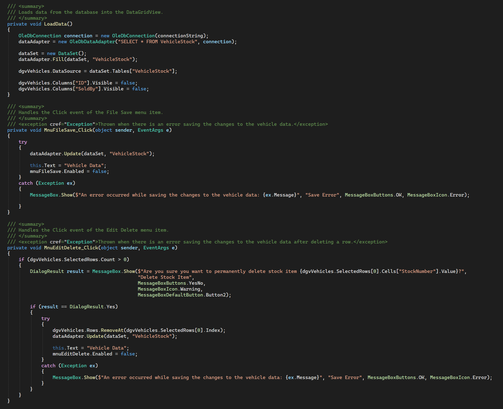
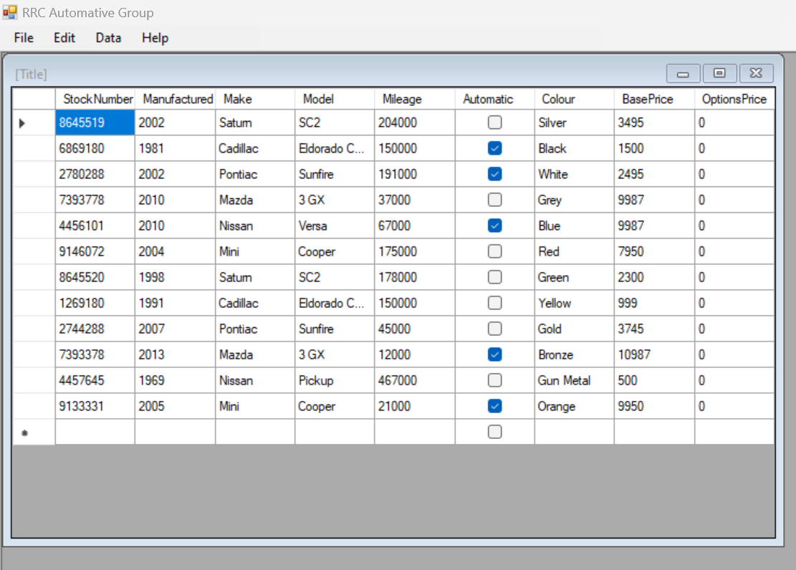
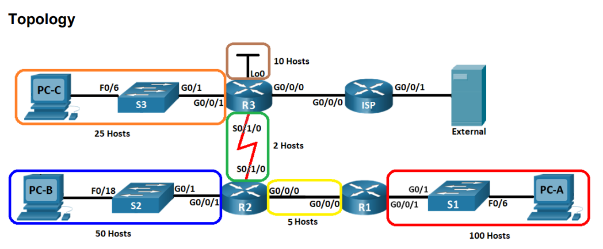

Projects
Developing a Vehicle Management System using ADO.NET Provider Objects and DataGridView Control
As part of this project, I worked on developing my skills in ADO.net provider objects, DataSet, and DataGridView control. Specifically, I added functionality to the Vehicle Data Form to manipulate data from a database. In the Vehicle Data Form, I implemented various design and functionality requirements, such as disabling the ability for users to delete or resize rows, auto-sizing columns using Fill mode, and displaying all vehicle data from the database. I also included error-handling mechanisms, such as displaying a message box when an exception occurs while retrieving vehicle data or deleting the selected vehicle. Moreover, I implemented various menu items and event subscriptions, such as the Save, Close, and Delete menu items. I also added validation requirements for data entry, and programmatically set a value of the "SoldBy" column to zero when a new row is added to the DataGridView. To ensure a smooth user experience, I tested the application thoroughly before the user acceptance testing phase. The application uses data binding to populate controls with vehicle data, and uses the provided database without altering its design in any way. Overall, this project has allowed me to gain valuable experience in working with ADO.net provider objects, DataSet, and DataGridView control, and has helped me to develop my skills in designing and implementing user-friendly applications.
 Designing and Implementing VLSM IP Addressing Scheme for a Network
As a junior network administrator, my objective for this project is to design and implement a VLSM IP addressing scheme to support the host requirements outlined in the given topology. The project will involve labeling and cabling, configuring IP routing, updating network security configurations, and testing and verifying IPv4 and IPv6 end-to-end connectivity. Additionally, the project will require me to modify intermediary devices that do not meet security best practices and demonstrate secure remote management access to all intermediary devices. Finally, I will need to use CLI commands to gather information and answer theory questions during the final project sign off with my instructor. Through this project, I aim to enhance my skills in network administration, specifically in VLSM IP addressing, IP routing, network security, and CLI commands. I look forward to completing this project successfully and demonstrating my abilities as a junior network administrator.
